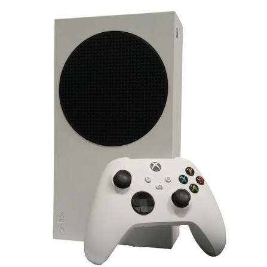

Which Xbox Should You Choose?
The best Xbox for most players is the Xbox Series X because it has stronger performance, more storage, and a disc drive. The Xbox Series S is better if you want a cheaper, smaller, all-digital console. Older Xbox consoles are mainly better for collectors or people who want older games.
Reference: Official Xbox Console Comparison
Console Comparison Table
| Console | Best For | Strength | Recommendation |
|---|---|---|---|
| Original Xbox | Collectors and retro gaming | Classic games like Halo | Only buy if you want retro hardware |
| Xbox 360 | Older games and nostalgia | Strong game library and achievements | Good for retro collectors |
| Xbox One | Budget gaming | Affordable used console | Okay if budget is very low |
| Xbox Series S | Digital gaming and Game Pass | Small, modern, and usually cheaper | Best budget choice |
| Xbox Series X | Best performance | 4K gaming, strong power, disc drive | Best overall choice |
Where to Order an Xbox
The safest places to order a new Xbox are official or major retailers. Check the official Xbox store first, then compare prices with trusted stores.
Order links: Xbox Official Store | Xbox Series X | Xbox Series S
My recommendation: choose the Xbox Series X if you want the best experience. Choose the Xbox Series S if you want to save money and you are okay with downloading games instead of using discs.

Xbox Recommendation Form
Fill out this form to decide which Xbox fits your gaming style.